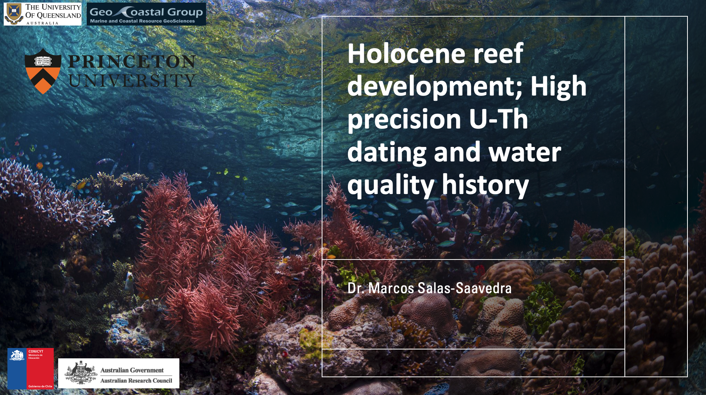

Holocene reef development; High precision U–Th dating and water quality history.Geochronology Seminar Series, Stony Brook University, November 2023.

Geochronology Seminar Series, Stony Brook University (Nov 2023).
Conference Presentations
U–Th dating of meteoric calcite on highly altered fossil corals to improve sea-level reconstruction.Salas-Saavedra, M., Niespolo, E., Webb, G.E., Webster, J., Nothdurft, L. — AGU Fall Meeting, 2024.
Holocene microbialite records of terrigenous influence on water quality for the offshore southern Great Barrier Reef.Salas-Saavedra, M., Webb, G.E., Sanborn, K.L., Zhao, J-X., Webster, J.M., Nothdurft, L., Nguyen, A. — Australian Earth Sciences Convention “Core to Cosmos”, 9–12 Feb 2021.
Physical properties and initial dating of a rapidly deposited layer in a Chilean margin fjord (Seno Reloncaví): a record of major historical earthquakes.Salas-Saavedra, M., St-Onge, G., Mulsow, S., Chapron, E., Debret, D., Desmet, M., Winiarski, T. — XI Student Conference GEOTOP, Montréal, 2010.
Comparison of earthquake-triggered turbidites from an active and a passive continental margin.St-Onge, G., Chapron, E., Mulder, T., Salas-Saavedra, M., Mulsow, S., Piper, D.J.W. — International Association of Sedimentologists, Mendoza, 2010.
Co-authored Abstracts
Reef coring: insights into Holocene palaeoenvironments, southern Great Barrier Reef.Webb, G.E., et al. (incl. Salas-Saavedra, M.) — 13th International Conference on Paleoceanography, Sydney, 2019.
Integrating coral reef paleoecological and paleoenvironmental proxies to reconstruct the Holocene initiation of the Great Barrier Reef.Sanborn, K.L., Webster, J.M., Webb, G.E., Braga, J.C., Humblet, M., Nothdurft, L., Patterson, M.A., Dechnik, B., Warner, S., Graham, T., Murphy, R.J., Salas-Saavedra, M., Yokoyama, Y., Obrochta, S.P., Zhao, J. — AGU Fall Meeting, 2019.
Media & Podcasts
University of Dhaka Podcast — Global and local environmental issues. Watch